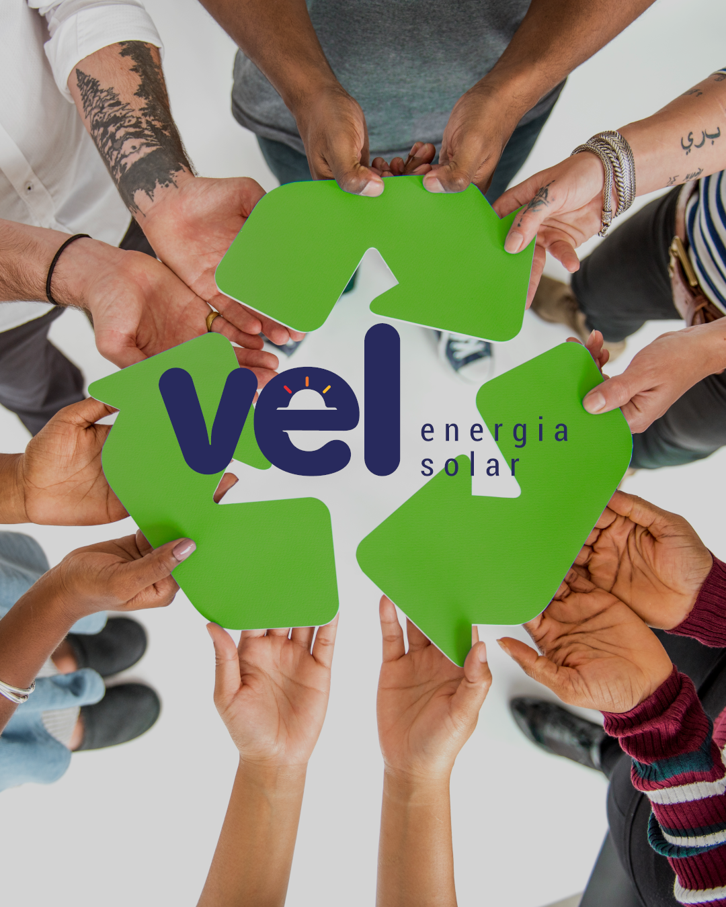
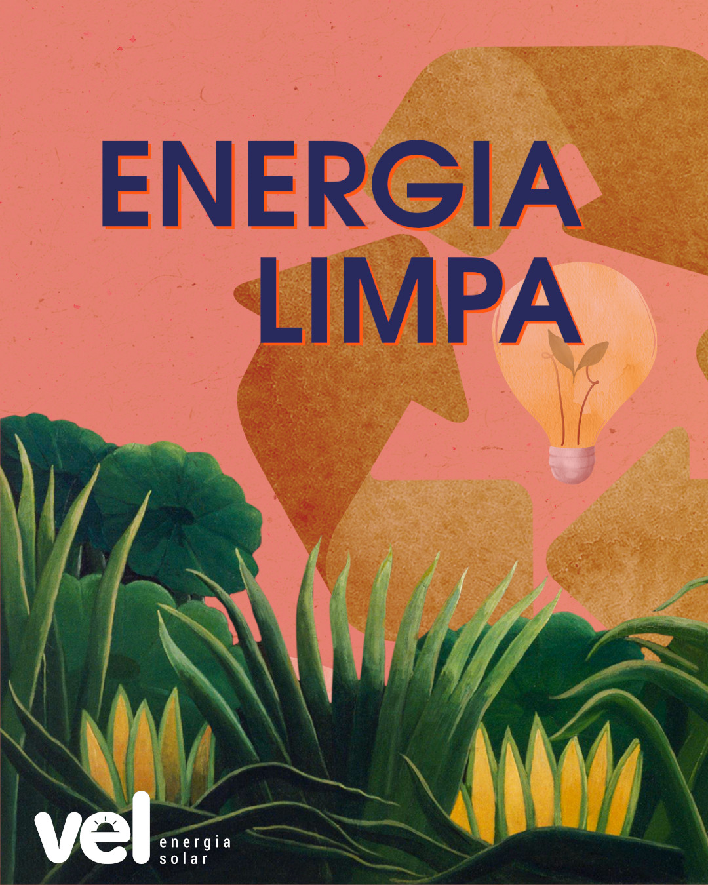
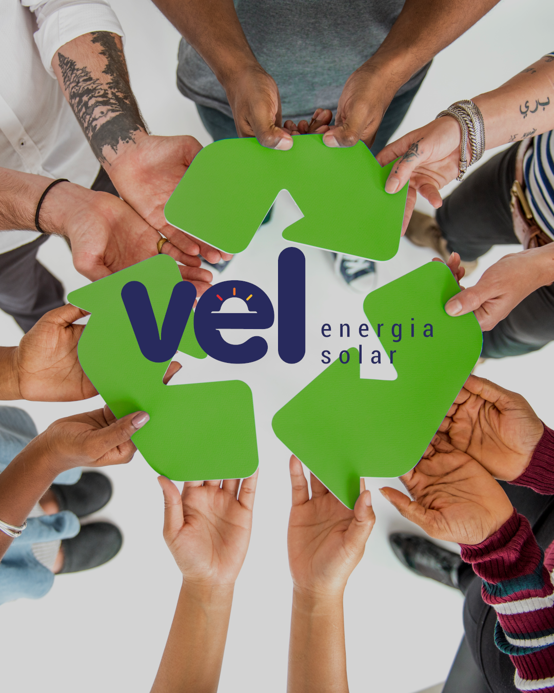
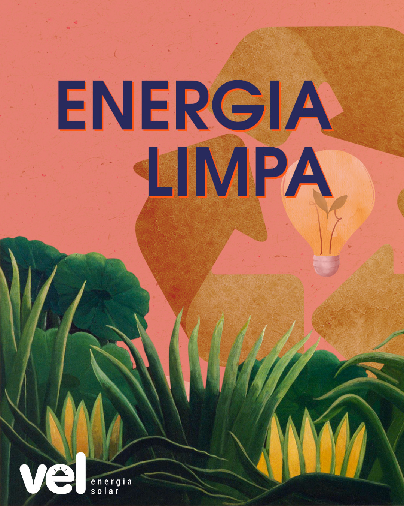

Comecei minha jornada ao querer entender a tecnologia cedo. Quando comecei a usar a internet, eu sempre gostei de ver códigos mesmo não entendendo nada do que via.
Mas saber que era aquilo que fazia o computador funcionar foi o que sempre achei incrível!
Quando comecei minha jornada gamer, descobri que tudo o que acontecia na tela tinha um código por trás, e foi aí que decidi que queria aprender tudo isso!
Fiz um curso de programação de jogos, mas não me aprofundei na época.
Comecei então minha jornada sozinho, aprendendo com tutoriais e bootcamps.
Hoje estou cursando um curso da Digital House para me desenvolver e entrar no mercado!
Fiz este portfolio para testar minhas habilidades e mostrar que estarei sempre evoluindo, será meu projeto, que teve início...
...Mas nunca terá um fim!!!

 


